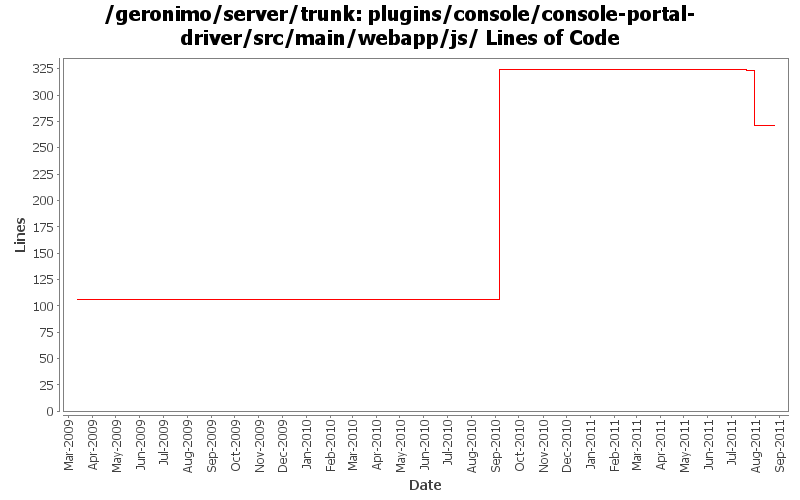

[root]/plugins/console/console-portal-driver/src/main/webapp/js

| Author | Changes | Lines of Code | Lines per Change |
|---|---|---|---|
| Totals | 7 (100.0%) | 301 (100.0%) | 43.0 |
| genspring | 1 (14.3%) | 218 (72.4%) | 218.0 |
| rwonly | 4 (57.1%) | 83 (27.6%) | 20.7 |
| xuhaihong | 2 (28.6%) | 0 (0.0%) | 0.0 |
make the advanced navigation tree auto-expand
1 lines of code changed in 1 file:
GERONIMO-6059 New look and feel of Geronimo 3.0 admin console (Step 1)
75 lines of code changed in 1 file:
GERONIMO-6094 Some issues of confirm msg tld in admin console
1 lines of code changed in 1 file:
GERONIMO-6088 Cross browser incompatibility of admin console
6 lines of code changed in 1 file:
GERONIMO-5516 Add isAdvanced properties to AdminConsoleExtensionGBean. Patch from janel with modifications.
218 lines of code changed in 1 file:
GERONIMO-4517 Apply unified message display style(G-4484) to javascript alert messages. Together with the localization of these messages. Thanks for the patch, Gang Yin
0 lines of code changed in 2 files: